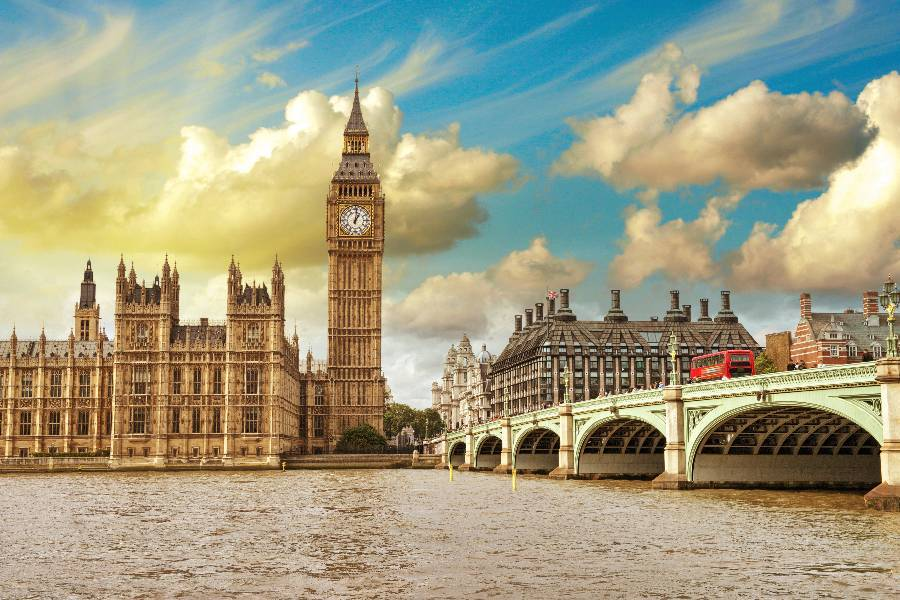

英國九日遊

📍 地點：英國倫敦
📅 天數：9天8夜
💰 價格：NT$ 116,699 起
行程內容
Day 1｜抵達倫敦
- 抵達倫敦希思羅機場，專車接送至市中心酒店
- 辦理入住，晚上自由活動
- 可逛當地酒吧或餐廳，感受英式夜生活
Day 2｜倫敦市區觀光
- 搭乘倫敦眼，俯瞰城市風光
- 遊覽國會大廈、大笨鐘、白金漢宮
- 漫步泰晤士河畔，拍攝經典景點照片
Day 3｜博物館日
- 參觀大英博物館，欣賞世界文物
- 下午前往自然歷史博物館探索恐龍與地球奇觀
Day 4｜劍橋一日遊
- 參觀劍橋大學校園，欣賞古老建築
- 康河泛舟，體驗學術氣息與寧靜景色
- 品嚐當地咖啡館下午茶
Day 5｜牛津一日遊
- 參觀牛津大學校園與博物館
- 遊覽圖書館與經典建築，感受歷史文化
Day 6｜倫敦自由活動
- 可逛牛津街、考文特花園購物
- 晚上自費欣賞西區百老匯音樂劇
Day 7｜泰晤士河遊船
- 搭乘遊船欣賞倫敦城市全景
- 沿途觀賞塔橋、聖保羅大教堂與倫敦塔
Day 8｜英格蘭小鎮探索
- 一日遊至古老鄉村小鎮
- 逛傳統市集，品嚐當地特色餐點
- 拍攝鄉村風景與小鎮建築
Day 9｜返回台灣
- 早餐後辦理退房
- 專車前往機場搭乘班機返回
- 結束愉快旅程